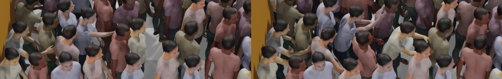
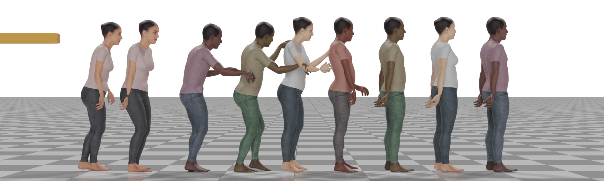
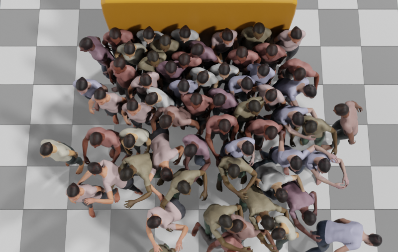

Push-and-Step: From RL-Based Balance Recovery to Physical Simulation of Dense Crowds
Alexis Jensen1, Pei Xu2, Charles Pontonnier1, Julien Pettré1, Ioannis Karamouzas3
1Univ Rennes, Inria, CNRS, IRISA-UMR 6074, France, 2Stanford University, 3University of California, Riverside
In IEEE/CVF Conference on Computer Vision and Pattern Recognition, 2026.





Abstract
We present a physics-based method for simulating full-body agents that recover balance by stepping or applying contact forces after being perturbed in dense crowds. While traditional 2D crowd simulations focus on navigation and social interactions in moderately dense settings, interactions in highly dense environments are predominantly physical, leading to push propagation, falls, and potential hazards. Existing models cannot capture how forces are transmitted through the body at the limb level. To address this, we use physics-based anthropomorphic simulations combined with a two-stage deep reinforcement learning framework. In the first stage, a policy is pre-trained using reference motion data and general balance rewards, enabling agents to handle a wide range of perturbations. In the second stage, an adaptive phase refines the policy to allow socially aware interactions, using hand contacts for stabilization guided by an online heuristic targeting neighbors' shoulders based on mechanical efficiency and collision risk. Ablation studies validate the training framework and reward components, and simulations reproduce trends observed in empirical studies of push propagation. Our method scales to large populations, offering new opportunities to study safety and collective behavior in dense crowds.


Video
BibTeX Citation
@inproceedings{jensen2026push,
title={Push-and-Step: From RL-Based Balance Recovery to Physical Simulation of Dense Crowds},
author={Jensen, Alexis and Xu, Pei and Pontonnier, Charles and Pettr{\'e}, Julien and Karamouzas, Ioannis},
booktitle={IEEE/CVF Conference on Computer Vision and Pattern Recognition},
year={2026},
pages={},
publisher={IEEE}
}